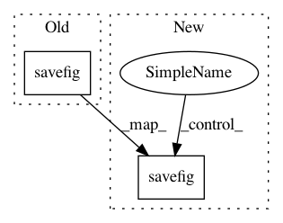

21a0a4d4cf4f0d1d261f6be876ccc42cc2a2414a,pycox/callbacks.py,PlotProgress,on_epoch_end,#PlotProgress#,118
Before Change
plt.style.use(self.style)
self.to_pandas().plot()
plt.savefig(self.filename+"."+self.type)
plt.close("all")
return False
def plot_altair(self):
After Change
// plt.style.use(self.style)
with plt.style.context(self.style):
self.to_pandas().plot()
plt.savefig(self.filename+"."+self.type)
plt.close("all")
return False
def plot_altair(self):
In pattern: SUPERPATTERN
Frequency: 3
Non-data size: 2
Instances
Project Name: havakv/pycox
Commit Name: 21a0a4d4cf4f0d1d261f6be876ccc42cc2a2414a
Time: 2018-03-13
Author: kvamme@samba8.ad.nr.no
File Name: pycox/callbacks.py
Class Name: PlotProgress
Method Name: on_epoch_end
Project Name: joaopalotti/trectools
Commit Name: 55796a77115dc1b04f38d1013d639deae0b1a93e
Time: 2019-07-18
Author: joaopalotti@gmail.com
File Name: trectools/procedures.py
Class Name:
Method Name: plot_system_rank
Project Name: ellisdg/3DUnetCNN
Commit Name: 5508d6730a37f9aff49549901ff8682898e14b5d
Time: 2018-03-20
Author: david.ellis@unmc.edu
File Name: brats/evaluate.py
Class Name:
Method Name: main